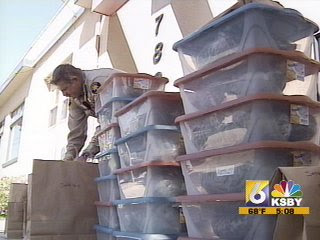

Morro Bay's municipal leaders embrace a "felon"? Charles Lynch (center, with ceremonial scissors) is welcomed by the community's business elite as he opens a licensed medical marijuana dispensary. The red-haired lady to his left is Mayor Janice Peters, who obviously didn't think that the dispensary threatened the community's "healthy family environment."
Charles Lynch, a wiry, gentle 46-year-old, faces a prospective prison term of up to a century behind bars. He committed no crime against persons or property. In fact, he committed no crime of any sort against any law he was liable to obey.
His supposed offense was to provide a legal palliative -- medical marijuana -- to people suffering from chronic pain in and around Morro Bay, California. When Lynch opened his state-licensed dispensary about two years ago, he was eagerly and openly welcomed by the commercial and municipal leaders of Morro Bay, who didn't consider his business controversial.
Lynch kept careful records and deployed sophisticated security measures in order to ensure that his product was distributed only to those who had a documented, legitimate medical necessity. Among his customers was Owen Beck, a local teenage athletic standout (in both football and soccer) who was diagnosed with bone cancer shortly before graduation.
When chemotherapy proved inadequate to arrest the course of the sickness, Owen's right leg was amputated below the knee. As if he hadn't suffered enough, Owen -- like many other amputees -- suffered from a neurological condition commonly called "phantom pain," in which he continued to feel the agonizing pain of his missing appendage. That condition, coupled with the pain associated with his cancer and the nausea inflicted by chemotherapy, made it all but impossible for Owen to eat. Prescription drugs exacerbated his condition by leaving him disoriented in a narcotic stupor.
Finally, Owen's parents obtained a medical marijuana prescription from a Stanford oncologist. Marijuana alleviated Owen's symptoms, causing the nausea to subside and helping him gain healthy weight. Charles Lynch took a particular interest in Owen's predicament, often filling his prescription for free. Not surprisingly, Lynch was well-liked and respected by his residential neighbors and neighboring businesses alike. This opinion wasn't universal, however.
Although Lynch was careful to follow state law and county ordinances alike, and it was clear that his business was that of a legitimate pharmacist rather than a drug pusher, he attracted the malign attention of a local resident named Pat Hedges. Permitting a medical marijuana dispensary in the community, Hedges harrumphed, was "not in the best interest of a community that prides itself on providing a healthy, family environment."
Hedges is certainly entitled to his opinion, as is any other sanctimonious fool. He was legally entitled to express that opinion and seek to change the law by persuading others to share it. He was not free to employ deceit or coercion to stop patients -- of whom Owen Beck was quite representative -- from receiving the medication to which they were legally entitled by way of a legitimate medical prescription.

The problem here is that Hedges is not your garden-variety self-righteous crank. He is also the Sheriff of San Luis Obispo (SLO) County.
Hedges is guilty of offenses against the Constitution, for which removal from office and social ostracism would be sufficient remedy. He is the subject of a civil lawsuit, and potential criminal investigation, for illegally wiretapping the office of Chief Deputy Gary Hoving, a 28-year veteran officer and the third-highest ranking official in the department.
The covert eavesdropping, which involved installation of a hidden camera and audio recording equipment, "was for the purpose of capturing Hoving on film and recording him saying or doing something that would amount to misconduct," according to a lawsuit filed by the former Chief Deputy.
Hedges insists that his actions were part of an investigation into criminal misconduct in the Department's narcotics unit -- specifically, that they failed to book narcotics and firearms into evidence, misused funds set aside for investigative work, and attempted to bilk the county by charging for unearned overtime. He also suspected that inmates in the County Jail had access to seized narcotics.
All of this alleged criminal misconduct happened by October 13, 2006, the date Hedges covertly, and illegally, recorded a meeting between Lt. Hoving and Sgt. Jay Donovan. When that act was revealed, Hedges announced that Hoving had been suspected of impeding an investigation into corruption among the deputies. He also requested that the County pay the legal costs incurred in defending himself against the $1.25 lawsuit filed by Hoving last September.
If Hedges is telling the truth about his motives for covertly recording Hoving, his actions are still illegal. But this leaves intact his admission that there apparently was a significant problem with narcotics-related crime in San Luis Obispo County -- among the enforcers of narcotics prohibition, that is.
I suspect this helps explain the otherwise inexplicable zeal with which Hedges targeted Charles Lynch, who operated a legal marijuana dispensary: The peaceable, respectable businessman was the softest imaginable target and a suitable distraction from the corruption at the Sheriff's Department.
In March 2007, several months after the illegal eavesdropping operation but several months before it was revealed to the public, Hedges invited the Drug Enforcement Administration to conduct an armed raid of Lynch's dispensary. The DEA, predictably, was only too eager to help. Hedges supplied several deputies to assist in the raid. He didn't explain how he determined which of his deputies he could trust to handle the "contraband" without "misplacing" it in profitable ways.
Just as disturbing is the fact that Hedges seized all of Lynch's sales and tax records, along with his client list. In addition to prompting another lawsuit against the Department by one of Lynch's customers, that seizure suggests that Hedges may soon go into the business of arresting Lynch's former clientele, which was composed of people suffering from tragic illnesses -- some terminal, others life-altering, all of them exceptionally painful.


Where did it end up? A SLO County Deputy helps the DEA steal the inventory from Charles Lynch's medical marijuana dispensary, March 29, 2007. Some of the Department's deputies had been previously accused by Sheriff Hedges of pilfering drugs and other evidence.Lynch was arrested in July of last year, released from jail on $400,000 bond, shackled with an ankle monitor, and placed under house arrest. So restrictive were the terms of Lynch's confinement that -- until he improvised a modification to his ankle monitor -- he would have violated the geographic terms of his parole by going to the bathroom in his own house.
Last week, a federal jury populated by the most incurious and manipulable people this side of Jamestown, Guyana convicted Lynch of five violations of what were described as federal drug "laws." Lynch plausibly argued that he had contacted the DEA and been assured by an official that he wouldn't get in trouble as long as he obeyed local laws; he was able to document that the phone calls took place, but couldn't identify the official with whom he spoke. This claim was the basis of Lynch's "entrapment by estoppel" defense -- that is, he was being prosecuted for something the government had told him was not a crime.
The DEA insisted that nobody in the relevant office had offered that advice to Lynch. However, no DEA official testified that Lynch had been told by the agency to shut down his dispensary. To any critically thinking human being, the mere fact that Lynch had repeatedly called the DEA would have been sufficient to create reasonable doubt: What reason would a conspicuous distributor of medical marijuana have to call the DEA unless he was asking about the legal status of his state-licensed business?
Presiding Judge George Wu behaved in the fashion one would expect of nearly every member of his law-molesting fraternity: He did his considerable best to insulate the jury from the relevant facts of the case. When Owen Beck, called to offer testimony in Lynch's behalf, made the "mistake" of mentioning that he used marijuana to treat cancer symptoms, Wu cleared the courtroom and dismissed the witness, lest the jury's deliberations be impermissibly tainted by critical facts.
Judge Wu banished mention of the phrase "medical marijuana," insisting that federal "law" supersedes California state law. This isn't the case, where the actual text and purposes of the Constitution are concerned.
Despite the fact that the pages of law books are polluted with literally thousands of federal criminal statutes, the Constitution authorizes the federal government to prosecute exactly three crimes: Treason, counterfeiting, and offenses against the "law of nations" (such as piracy). Those three crimes, of course, represent the core functions of the regime now ruling us -- "treason" being defined as making war against the American people, "counterfeiting" being the job description of the Federal Reserve System that runs and ruins our economy, and Washington's foreign policy being nothing other than a long train of offenses against the law of nations for at least the last century. If the Feds took their constitutional duties seriously, nearly all of them would have to submit to immediate arrest.
Over the past sixty-five years, Washington has usurped the reserved powers of the states regarding what Hamilton called "the ordinary administration of criminal and civil justice." The Constitution assigned no role in policing what Madison called the "internal order" of the states; that calling is found among the "numerous and indefinite" powers reserved to the states by the Constitution.
It's hardly breaking news that Washington ignores the constitutional limits on its authority, or that the self-inflicted plague called the "war on drugs" has done a great deal to abet the consolidation of law enforcement under federal control. What is genuinely remarkable about the Morro Bay atrocity is the role of the County Sheriff in facilitating the federal crime against Charles Lynch and his clients.
From its origins in Anglo-Saxon antiquity, the office of County Sheriff has inherited the paramount law enforcement role within his jurisdiction. In our constitutional system, the Sheriff's duty is to protect the public peace against criminal threats to life, liberty, and property from both private malefactors and abuses of power by federal officials.
Over the last decade and a half, some county sheriffs have tried to reclaim their proper constitutional authority. Former Graham County, Arizona Sheriff Richard Mack and former Ravalli County, Montana Sheriff Jay Printz mounted a partially successful legal challenge to the Brady Law, extracting from the Supreme Court a qualified admission that it is constitutionally impermissible for the federal government to "command the States' officers, or those of their political subdivisions, to administer or enforce a federal regulatory program" -- in this case a background check system for firearms purchases.
Hi-diddly-ho, Jackbooted Thugarinos! He may look just like Ned Flanders, but Sheriff Dave Mattis of Wyoming's Big Horn County is one of the few local law enforcement officers with the intelligence to understand his constitutional role, and the courage to carry it out.

In 1993, Sheriff Dave Mattis of Big Horn County, Wyoming, announced that federal law enforcement officials would be forbidden to step foot in his county without his explicit permission. He explained that under the Constitution's allotment of law enforcement authority, the Feds "do not have jurisdiction in my county unless I grant it to them."
"I am reacting in response to the actions of federal employees who have attempted to deprive citizens of my county of their privacy, their liberty, and their property without regard to constitutional safeguards," explained Mattis. "I hope that more sheriffs all across America will join us in protecting their citizens from the illegal activities of the IRS, EPA, BATF, FBI, or any other federal agency that is operating outside the confines of constitutional law. Employees of the IRS and the EPA are no longer welcome in Bighorn County unless they intend to operate in conformance to constitutional law."
How would he deal with Federal officials who arrogated such supposed authority to themselves?
"If a sheriff doesn’t want the Feds in his county he has the constitutional right and power to keep them out, or ask them to leave, or retain them in custody," Mattis stated with unflinching candor.
It would likewise follow that if the Feds, having defied an order to leave, resist an effort to take them into custody, the Sheriff can, and should, use whatever force is necessary in order to make them submit.
An army of occupation: "Local" police, doing the bidding of the distant Leviathan that subsidizes them, collaborate in a federal assault on a legal medical marijuana dispensary in California.

The job of a sheriff is to protect the rights of those residing within his county from both internal and external threats.
Occasionally we read or hear of a sheriff who is prosecuted for collaborating with criminal elements within his jurisdiction. We really should see prosecutions of sheriffs who collaborate with Federal criminals from outside their jurisdiction.
Pat Hedges was a Quisling of just that sort. Had he been a legitimate sheriff, he and his deputies would have acted to defend Charles Lynch's business from a federal assault, rather than precipitating and collaborating in it. If necessary, they -- along with a citizens' posse, perhaps -- would have mustered on the front steps of the dispensary, armed and prepared to repel the Feds.
It's a wonderful dream, given a tiny but tantalizing element of plausibility by the principled actions of Sheriffs Mack, Printz, and Mattis. Unfortunately, Pat Hedges is the rule, and the injustice inflicted on Charles Lynch typical of what we can expect as federally subsidized sheriffs sell out their communities, rather than defending them.

On Sale Now!
Dum spiro, pugno!
8 comments:
A self-inflicted wound indeed, Mr. Grigg. On at least a few occasions that are provable, the Feds have brought narcotics into the country.
Great article Will! If only there were more sheriffs like Dave "Ned Flanders" Mattis. Too bad he isn't pictured clad in "Riders of the Rohan" armor. Until now I had mistakenly assumed that only those who were hopelessly corrupt and slavishly obedient to "higher" federal authority ever got elected sheriff.
Again, the only thing that can
save us from these a-holes is a
jury that knows the difference
between liberty and bondage.
Obviously the "law" can't(and won't)
save us.
"Where the Spirit of the Lord is,
there is Liberty."
-St.Paul
Come soon, Lord!
Saw this on the web today. Denver cops are readying cages for the mass arrests. This should make for some interesting police stories.
http://cbs4denver.com/denver2008/denver.protesters.arrested.2.793930.html
Re: Zachary
Yes sir, you are correct! (delivered in a McMahonesque baritone)
I recall not too long ago that a CIA registered plane full of cocaine had crashed in southern Mexico, and I vaguely remember reading about another story of CIA compilicity in ferrying in some major drug shipments into Miami. Moreover, retired and highly decorated DEA agent Michael Levine has some pretty interesting information on this topic as well, most noteworthy of which included a conversation he had with CIA operatives at an inter agency party in Buenos Aires back in 1979 concerning insidious CIA black ops. Perhaps my friend Will Grigg will revisit some of these stories or related stories some time in the future?
-Gilligan W.
I suppose when people begin to realize that government is the great evil that they need to protect themselves from things might change. Unfortunately, only briefly as the amerikan experience clearly shows. Of course you'd have to recognize also that gov'ts hand-maiden theism as a willing accomplice which isn't likely amongst the sheeple either.
Better to have people suffer the biases of others than to enjoy the benefits of personal liberty and freedom. Isn't that what the ism's/ist's have always been about?
After all, one would think that even a true theist would at least recognize that it is not for man to make one of their god's created plants illegal. Then again, those are usually the first people to demand that 'those people' be put in their place aren't they.
Sic Semper Tyrannis
U.S. May Ease Police Spy Rules
More Federal Intelligence Changes Planned
By Spencer S. Hsu and Carrie Johnson
Washington Post Staff Writers
Saturday, August 16, 2008; A01
The Justice Department has proposed a new domestic spying measure that would make it easier for state and local police to collect intelligence about Americans, share the sensitive data with federal agencies and retain it for at least 10 years.
The proposed changes would revise the federal government's rules for police intelligence-gathering for the first time since 1993 and would apply to any of the nation's 18,000 state and local police agencies that receive roughly $1.6 billion each year in federal grants.
-------
Nothing to see here folks. Move along.
During Enoch's Time 7th from Adam
Enoch walked with God. Enoch was tranlated and did not see death Genesis 5:24,Hebrews 11:5, Jude 1:14-25. http://www.endtime.org
Read "The Christian Science Standard Vol. 15, No. 2 and 1 John 2:15. Thou shalt have no other god's before me Exodus 20:3.Verly, Verly, I say unto you. If a man keep my sayings, he shall never see death John 8:51
Post a Comment